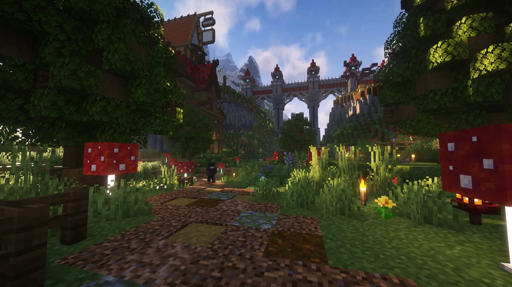
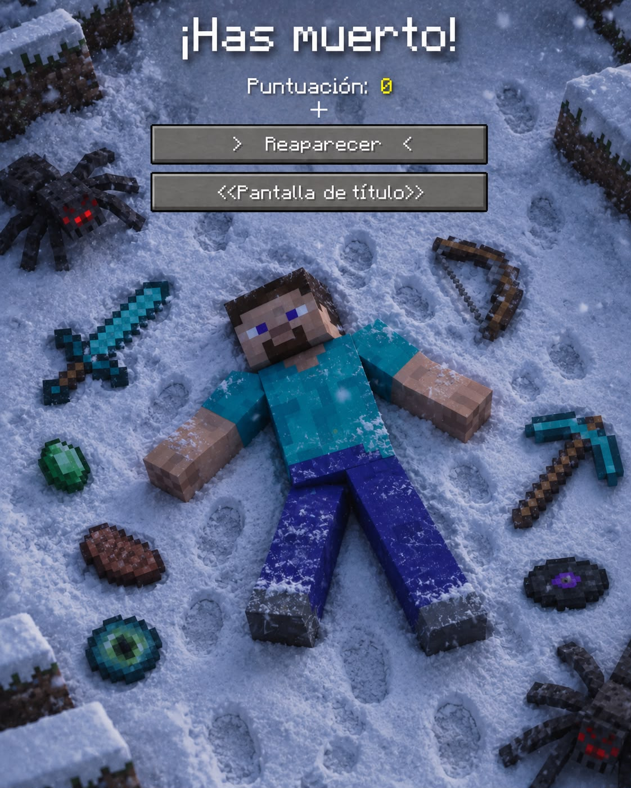
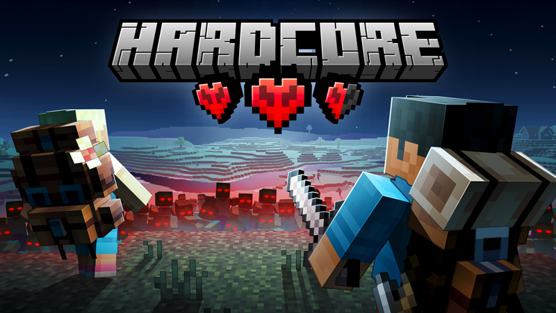
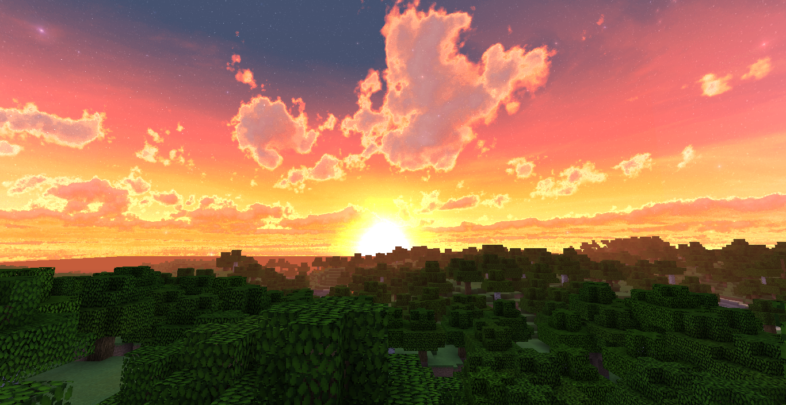

Que es minecraft
Minecraft es un videojuego que trata de crear tu propio mundo y hacer con el lo que quieras, su forma de jugar resulta ser sencilla y versatil, contando con dos modos de juego más usadas, el modo supervivencia y modo creativo

Comparacion de modos de juego
| Modos de juego | |
|---|---|
| Modo supervivencia | Modo creativo |
| Tienes vida, puedes morir | No tienes vida, eres inmortal |
| Tienes que conseguir recursos para sobrevivir | Tus recursos son ilimitados |
| Los monstruos te pueden atacar | Los monstruos no te pueden atacar |
| Puedes perder todo lo que lleves contigo | Nunca perderas nada |
| Tu viaje por el mundo será más desafiante | Puedes volar por todo el mundo sin tener nada |

Los caminos de la vida
Para esta reflexion nos enfocaremos especificamente en el modo supervivencia, donde tienes vida y cualquier decisión que tomes puede provocar tu muerte, casi todo te puede matar, por ejemplo:
- Los monstruos
- El daño por caida
- El hambre
- El fuego
- Ahorgarse
Entre otras formas de morir, pero si bien esas cosas pueden matarnos, en realidad somos nosotros que de forma indirecta provocamos nuestra muerte, en especial cuando nos aventuramos sin conoccer el camino al que vamos, en la vida, nosotros tenemos que estar seguros hacia que camino queremos ir, cada camino tiene sus dificultades, pero algunos son más peligrosos que otros, en especial si te aventuras por un camino que no conoces.
¿Le tienes miedo a morir o a perderlo todo?
El modo supervivencia puedes llevar tu "inventario" que es una parte fundamental para tu exploración, ya que te permite llevar diferentes objetos para tu supervivencia, pero si llegas a morir todos los objetos de tu inventario se perderan si no los recuperas, a muchos jugadores les frusta eso, porque los objetos estan lejos o desaparecieron y tendrian que comenzar de nuevo.
Sin embargo hay jugadores que hacen trampa, activan los trucos y activan el "mantener inventario" (truco que permite mantener todo lo que tengas en tu inventario aunque hayas muerto), si bien cada uno juega como quiere, deja pensando mucho una frase que puede aplicarse en la vida real, "No le tienes miedo a la muerte, le tienes miedo a perderlo todo". Solo hay dos cosas que son ciertas en esta vida:
- Nadie sabe que hay despues de la muerte
- No nos llevamos nada a la tumba, solo nuestros recuerdos
Si bien en la vida real si morimos, no podemos revivir como en el juego, el mayor pensamiento que tenemos cuando pensamos en nuestra muerte suele ser cosas como: "Quien se encargara de mis cosas, como reaccionaria mis seres queridos, quienes van a ir a mi funeral, o que pensaran de mi después de muerto", siempre pensamos en lo material o lo emocional, pero pocas veces nos cuestionamos ¿que hay en el más allá?, supongo que aún no podremos responder a esa pregunta.


Solo tienes una vida
Dicho todo lo anterior, se crea un paralelismo, "Si cuando nos morimos, solo nos llevamos los recuerdos que hemos vivido, entonces hay que disfrutar la única vida que tenemos", En el modo supervivencia, el objetivo es no morir, una parte de los jugadores prefieren ir a la segura, con calma y de forma relajada y otros simplemente juegan de forma arriesgada, va a lugares muy peligrosos sin preparación o haciendo acrobacias muy inseguras.
Las personas tienen diferentes puntos de vista con respecto a su única vida, hay quienes se cuidan del peligro y otras que lo desafian, pero la triste realidad es que nadie esta exento de morir, los dos pueden morir vivan como vivan, sea como juegues tu única vida, más que preocuparte por morir, es disfrutar tu vida y llevar tus más bonitos recuerdos, esos recuerdos como explorar tu mundo y conocer las cosas que te apasionan, al final es la historia de tu vida la que estas escribiendo.
Entonces ¿Que aprendimos hoy?
- Las decisiones que tomamos pueden influir en el camino que seguimos.
- Es importante prepararnos antes de enfrentar situaciones difíciles.
- Perder cosas puede preocuparnos, pero también podemos aprender de esas experiencias.
- Los recuerdos y las experiencias forman parte de nuestra historia.
- Disfrutar la vida significa dedicar tiempo a lo que nos importa y nos apasiona.
